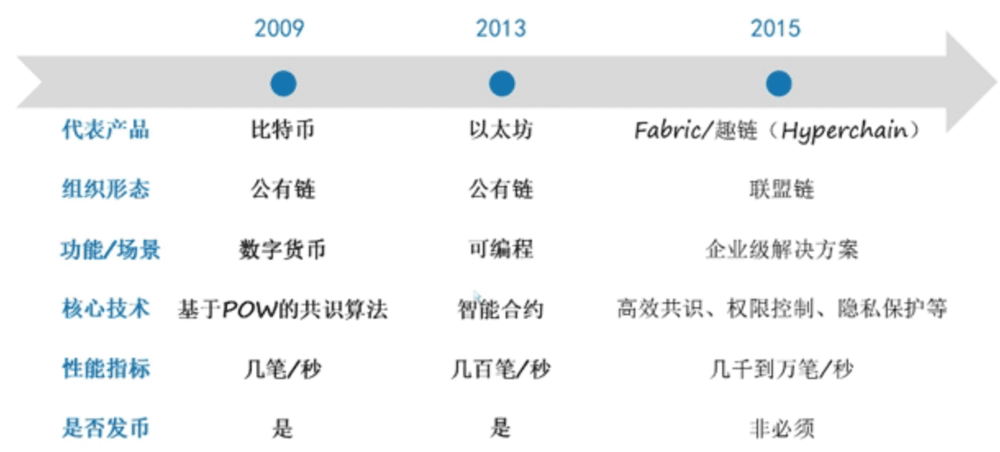
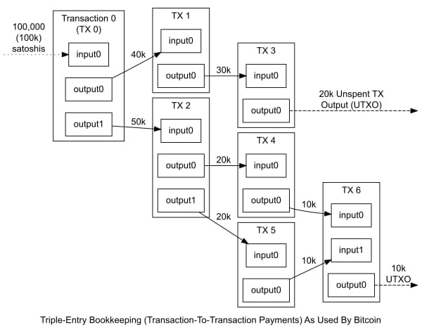
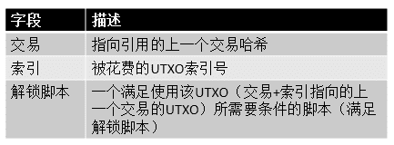
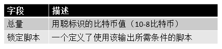
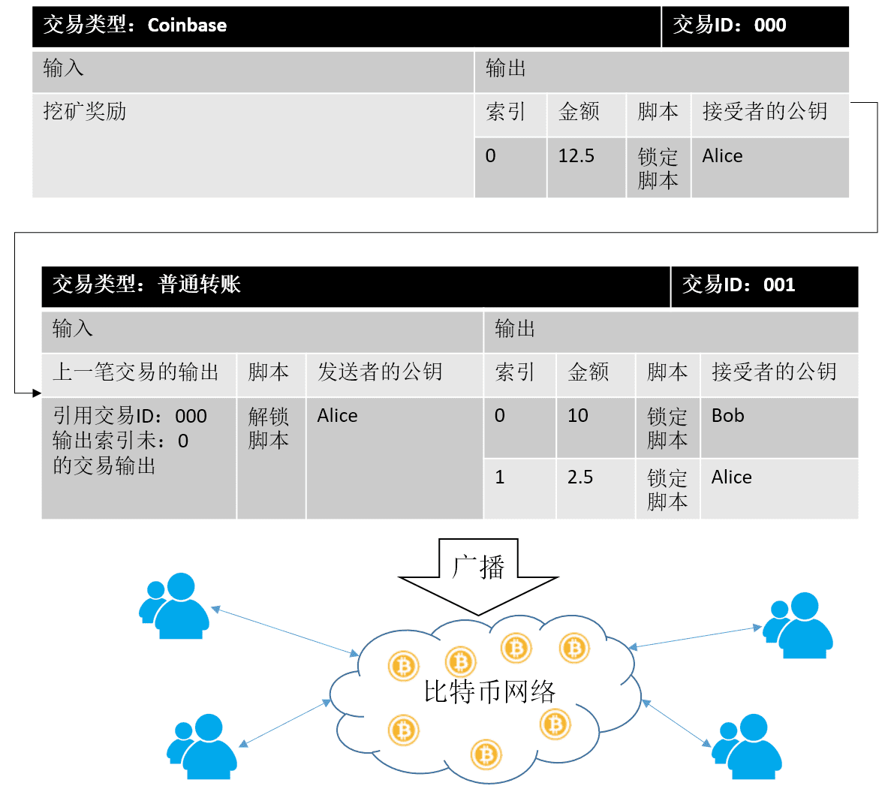
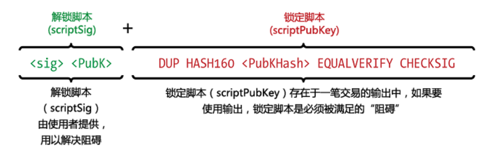
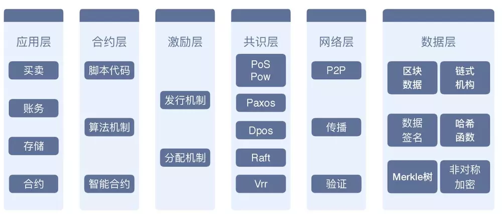
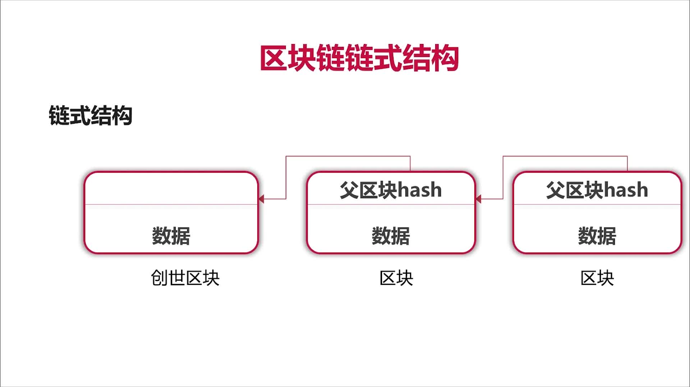
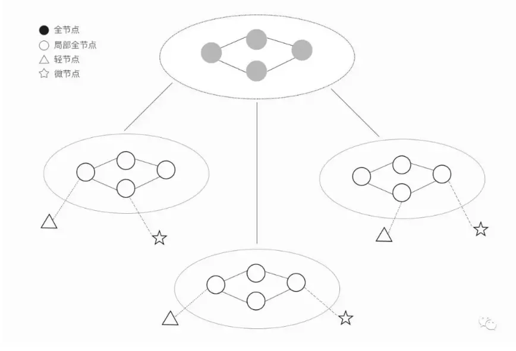
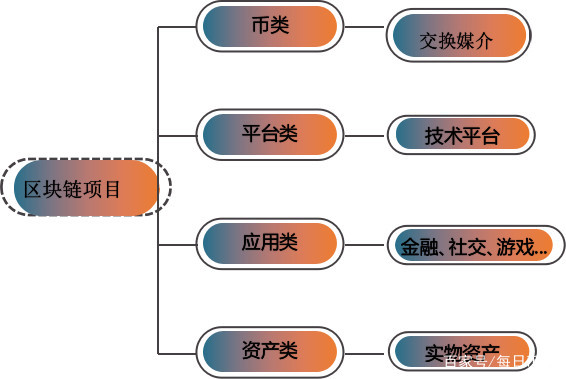

区块链概述
区块链并非单一创新技术，而是将许多跨领域技术凑在一起，包括密码学、数学、演算法与经济模型，并结合点对点网路关系，利用数学基础就能建立信任效果，成为一个不需基于彼此信任基础、也不需仰赖单一中心化机构就能够运作的分散式系统，而比特币便是第一个采用区块链技术而打造出的一套P2P电子现金系统，用来实现一个可去中心化，并确保交易安全性、可追踪性的数位货币体系。
区块链:一种特殊的公开的分布式数据库,具有分布式存储，分布式记录，去中心化，分布式维护等特性。
- 全民记账
- 不可篡改（只能增查,不能改删）
- 可追溯
- 去中心化
核心技术：
- 区块链底层
- 智能合约
- 密码学和数字签名用于身份地址标识
- 共识算法用于工作量证明
- 分布式存储技术用于存储交易记录和区块，分布式网络技术用于网络通信和节点发现
区块链分类:
- 共有链
- 私有链
- 联盟链
区块链版本：
- 区块链1.0-可编程货币：数字货币去中心化，数字化货币及支付系统
- 区块链2.0-可编程金融：智能合约，数字资产，金融应用
- 区块链3.0-可编程社会：去中心化互信网络，去中心化信任机制，公证，仲裁，审计，物流，医疗等领域
区块链2.0是指智能合约,智能合约与货币相结合,对金融领域提供了更加广泛的应用场景，代表是’以太坊’，以太坊 = 区块链 + 智能合约。
账本验证
- Hash
账户所有权
非对称加密：公开密钥与私有密钥是一对，如果用公开密钥对数据进行加密，只有用对应的私有密钥才能解密；因为加密和解密使用的是两个不同的密钥，所以这种算法叫作非对称加密算法。
- 账户用一个地址（Hash值）来标识
- 一个地址拥有一个私钥（如果私钥丢失了，比特币可能会丢失；私钥丢失了的话，是不能找回的；私钥可以通过两次哈希处理得到地址，而地址不能推导出私钥；非对称）
- 不泄露私钥的情况下证明我们拥有某个地址的私钥：通过交易签名（非对称）的方式
- 把交易进行Hash得到摘要
- 用私钥对摘要进行签名（加密）,同时私钥也生成付款方的公钥
- 广播交易，验证信息
- 用签名和付款方的公钥进行验证，返回交易摘要，验证是否是原始的交易信息（解密）
私钥-公钥关系:
- 公钥和私钥成对出现
- 公开的密钥叫公钥，只有自己知道的叫私钥
- 用公钥加密的数据只有对应的私钥可以解密
- 用私钥加密的数据只有对应的公钥可以解密
- 如果可以用公钥解密，则必然是对应的私钥加的密
- 如果可以用私钥解密，则必然是对应的公钥加的密
钱包
加密数字货币是一种基于区块链技术的数字货币，加密数字货币钱包是专门用来管理这些资产的应用。加密数字货币钱包提供钱包地址的创建、加密数字货币转账、每个钱包地址交易历史的查询等基础金融功能。钱包应用按照密码学原理创建1个或多个钱包地址，每个钱包地址都对应1个密钥对：私钥和公钥。公钥是根据私钥进行一定的数学运算生成，与私钥一一对应。公钥主要是对外交易使用，每次交易都必须使用私钥对交易记录进行签名以证明对相关钱包地址里面的资产有控制权。私钥是唯一能够证明对于数字资产有控制权的凭证,因此对于数字资产钱包来说，私钥是最重要的。私钥的生成和存储方式决定了资产安全与否。因此，通常意义上的数字资产安全其实就是私钥的安全，一个钱包是不是安全主要看它能否安全的管理和使用私钥。
挖矿（记账）
- 记账：Hash打包过程
- 节点消耗资源，有奖励
挖矿-工作量证明：
- 一段时间内，只有一人可以记账成功
- 通过解决密码学难题（即工作量证明）竞争获得唯一记账权
- 其他节点复制记账结果
普通的hash打包过程会获得一个摘要信息（hash值），规定获得的摘要信息必须以特定值开头才能算作挖矿成功，获得唯一记账权，故需要引入一个“随机数”作为Hash运算的参数。
共识机制
- 两个节点同时完成工作量证明，使用谁的区块，使用共识机制。
- 节点工作量只有在其他得节点认同其是有效的，因此会主动遵守规定
- 每个节点会选择一条累计工作量最大（最长）的区块链，延长最长链
例如，两个节点同时完成工作量证明，分别打包成3458A和3458B，周围的节点选择出累计工作量最大（/最长）的区块链为3458A后进行广播，以3458A作为主链，3458B作为备用链。若之后节点接收到3458B传来的3459B区块，周围的节点选择出累计工作量最大（/最长）的区块链为3458B<——3459B，此时再把备用链3458B作为主链，3458B<——3459B接入区块链。有时候某些节点先接收了3459B，此时会将3459B作为孤块保存，一旦该节点接收到3458B，就会将3458B<——3459B接入区块链。
交易原理
当你发起一笔比特币交易后，将交易广播到全网，挖矿节点接收到交易后，先将其放入本地内存池进行一些基本验证，比如该笔交易发费的比特币是否是未被花费的交易，如果验证成功，则将其放入”未确认交易池“等待被打包，如果验证失败，则被标记为”无效交易“不会被打包，也就是说，旷工在寻找nonce的同时还需要及时验证每笔交易。
所谓比特币交易就是从一个比特币钱包向另一个中转账，每笔交易都有数字签名来保证安全。一个交易一旦发生那么就是对所有人都公开的，每个交易的历史可以最终追溯到相应的比特币最初被挖出来的那个点。
比特币转账需要支付给旷工手续费，按交易所占的字节数计费，旷工一般会优先打包手续费高的交易到区块里。
比特币的UTXO模型
比特币系统没有余额的概念，它使用的是UTXO模型（Unspent Transaction Outputs，未使用过的交易输出），我们在交易过程中经常说的钱包余额，实际上是一个钱包地址的UTXO集合。所以，在比特币网络中，存储比特币余额的是交易输出，准确点说就是未使用过的交易输出，而每一笔交易的输入实际上引用的是上一笔交易的输出。所以，要计算一个用户的比特币余额，就需要遍历整个交易的历史。而以太坊由于采用了Account模型，也就是采用余额的概念，所以不需要溯源整个交易历史。
交易分类
交易分为2类：
- Coinbase交易：挖矿奖励，没有输入，只有输出
- 普通交易：用户之间的普通转账交易
交易过程
 假设，由于Alice挖矿被奖励了12.5个比特币。而Alice在一笔交易中，需要转账给Bob10个比特币。而Bob最终确认并接收了Alice发送的10个比特币，而同时由于多出了2.5个比特币。其实这笔交易最终是生成了2个输出，一个是发送给Bob的10个比特币，另一个是找零产生的发给Alice的2.5个比特币（备注：这里不考虑交易费）。
Alice的锁定脚本的作用是，设定成只有Alice才能使用这笔输出。而要使用这个UTXO，就必须要证明自己是Alice。
比特币交易解码后的内容:
1 | { |
交易脚本
比特币客户端使用一个用类Forth脚本语言编写的脚本去验证比特币的交易，这个脚本语言不是图灵完备的，不具备循环等复杂的特性。它是一种基于堆栈的执行语言，该脚本语言的简单特性，虽然使得它不能实现复杂的功能，但是也提高了交易脚本的安全性（设计简单，减少了攻击面）。而以太坊就是诟病比特币交易脚本功能有限，所以设计了一个图灵完备的脚本语言，也就是我们常说的智能合约脚本语言，能实现更复杂的功能，但同时也增加了安全隐患。
当一笔比特币交易被验证时，每一个输入中的解锁脚本与其所引用的输出中的锁定脚本同时执行，从而检查这笔交易是否有效。如图所示，是最为常见类型的比特币交易的解锁和锁定脚本:
验证过程:当我们拿到一笔交易时，将当前输入的解锁脚本，和该输入所引用的上一笔交易输出的锁定脚本进行特定的验证过程，最终若返回TRUE，说明交易有效。
区块链架构模型
- 数据层：封装了底层数据区块的链式结构，以及相关的非对称的公钥私钥加密技术和时间戳技术；是整个区块链最底层的数据结构。
- 网络层：P2P机制，数据传播机制，数据间认证机制
- 共识层：共识机制算法
- 激励层：用于公有链，联盟链
- 合约层：智能合约
- 应用层：与上述区块链核心架构分开部署，通过RPC（Remote Procedure Call:远程过程调用)互联
链式结构
Hash函数:
- MD系列:已经不再安全
- SHA系列:推荐SHA256, SHA3
1 | func hash(input string) string { |
ICO和IPO
- ICO（Initial Coin Offering），首次币发行，源自股票市场的首次公开发行（IPO）概念，是区块链项目首次发行代币，募集比特币、以太坊等通用数字货币的行为。
- IPO（Initial Public Offerings），首次公开募股，是指一家企业或公司 （股份有限公司）第一次将它的股份向公众出售（首次公开发行，指股份公司首次向社会公众公开招股的发行方式）。
智能合约
智能合约是一套以数字形式定义的承诺，包括合约参与方可以在上面执行这些承诺的协议，也就是说智能合约是一套能够自动执行某些手动才能完成任务的协议。其实智能合约相当于在计算机系统中构建一份参与方均可读的合同。只有当某一事件触发后，则会立即执行。例如，A向B付款XX元，B则给予A货物。
智能合约并不是一定要依赖于区块链来实现，而区块链的部分基础特性决定了智能合约更加适合于在区块链上来实现。比如去中心化，数据的防篡改，高可用性等。去中心化能够保证数据的全网备份与不可受第三方机构的干扰，无需担心数据会被篡改。同时也立于以后的审计工作。高可用性不会存在如目前的中心服务或者中心存储系统受到攻击或其他问题而发生合约不执行的问题。其实综合来说,区块链给予智能合约最好的特性就是“信任机制。
目前来说，智能合约同样也有很多的局限性。例如线下的问题解决起来还是无法与线上的问题相提并论的。如商品问题，给予的商品质量如何评估与上链，是否还需要依赖于第三方？ 同时智能合约的编写者对于合约的细节把控必须特别的严谨。一是合约漏洞，不严谨的合约造成对某个参与者的损失。二是可能会出现Bug，而如果bug被黑客所利用那么就会造成重大的损失。同样智能合约的法律问题也是要考虑的重点。
以太坊
以太坊（英文Ethereum）是一个开源的有智能合约功能的公共区块链平台，通过其专用加密货币以太币（Ether）提供去中心化的虚拟机（“以太虚拟机” Ethereum Virtual Machine）来处理点对点合约。
比特币并不完美，其中协议的扩展性是一项不足，例如比特币网络里只有一种符号——比特币，用户无法自定义另外的符号，这些符号可以是代表公司的股票，或者是债务凭证等，这就损失了一些功能。另外，比特币协议里使用了一套基于堆栈的脚本语言，这语言虽然具有一定灵活性，使得像多重签名这样的功能得以实现，然而却不足以构建更高级的应用，例如去中心化交易所等。以太坊从设计上就是为了解决比特币扩展性不足的问题。
以太坊是一个平台，它上面提供各种模块让用户来搭建应用。具体来说，以太坊通过一套图灵完备的脚本语言（EthereumVirtual Machinecode，简称EVM语言）来建立应用，它类似于汇编语言，但以太坊里的编程并不需要直接使用EVM语言，而是类似C语言、Python、Lisp等高级语言，再通过编译器转成EVM语言。
上面所说的平台之上的应用，其实就是合约，这是以太坊的核心。合约是一个活在以太坊系统里的自动代理人，他有一个自己的以太币地址，当用户向合约的地址里发送一笔交易后，该合约就被激活，然后根据交易中的额外信息，合约会运行自身的代码，最后返回一个结果，这个结果可能是从合约的地址发出另外一笔交易。需要指出的是，以太坊中的交易，不单只是发送以太币而已，它还可以嵌入相当多的额外信息。如果一笔交易是发送给合约的，那么这些信息就非常重要，因为合约将根据这些信息来完成自身的业务逻辑。合约所能提供的业务，几乎是无穷无尽的，它的边界就是你的想象力，因为图灵完备的语言提供了完整的自由度，让用户搭建各种应用。
比特币网络事实上是一套分布式的数据库，而以太坊则更进一步，她可以看作是一台分布式的计算机：区块链是计算机的ROM，合约是程序，而以太坊的矿工们则负责计算，担任CPU的角色。这台计算机不是、也不可能是免费使用的，不然任何人都可以往里面存储各种垃圾信息和执行各种鸡毛蒜皮的计算，使用它至少需要支付计算费和存储费，当然还有其它一些费用。
分叉
比特币社区开发者一直在致力于改进比特币,但是不像传统软件的升级，一个分布式共识系统的升级是非常困难的，需要协调好所有的系统参与者。每次升级可能会伴随着区块链的共识规则改变，这会导致整个网络中升级了软件的节点与未升级软件的节点运行在不同的规则下，于是分叉就产生了。
硬分叉
如果区块链软件的共识规则被改变，并且这种规则改变无法向前兼容，旧节点无法认可新节点产生的区块，即为硬分叉。这时候旧节点会拒绝新规则的区块，于是新节点和旧节点会开始在不同的区块链上运行（挖矿、交易、验证等），由于新旧节点可能长期存在，这种分叉也可能会长期持续下去。
软分叉
如果区块链的共识规则改变后，这种改变是向前兼容的，旧节点可以兼容新节点产生的区块，即为软分叉。实际上，软分叉通常刚开始并不会产生两条区块链，因为新规则下产生的块会被旧节点接受，旧节点只是无法识别新规则的真实意义。所以新旧节点仍然处于同一条区块链上，对整个系统的影响也就较小。
共识算法
PoW
POW（Proof of Work）：工作量证明，即你能够获得的币的数量，取决于你挖矿贡献的有效工作，也就是说，你用于挖矿的矿机的性能越好，分给你的收益就会越多，这就是根据你的工作证明来执行币的分配方式。通俗的说，PoW 的意思就是社会主义，按劳分配，多劳多得。
PoW 的优势与劣势：
- PoW机制的设计目的是保证安全。无论是在中心化还是非中心化系统中，防止作弊都是很重要的。
- PoW 假设大多数人不会作弊，如果你想作弊，你要有压倒大多数人的算力（51%攻击），但不能防止矿工抱团取暖。
PoS
PoS（Proof of Stake）：权益证明，类似比特币这样的 PoW 币种挖矿带来了巨大的电力能源消耗，为了解决这种情况，所以有了 PoS。PoS 试图解决 PoW 机制中大量资源被浪费的情况。这种机制通过计算你持有占总币数的百分比以及占有币数的时间来决定记账权。在现实世界中 PoS 很普遍，最为熟知的例子就是股票。股票是用来记录股权的证明，股票持有量多的，拥有更高更多的投票权和收益权。通俗的说，PoS 就是资本主义，按钱分配，钱生钱。
- Proof of Deposit：这次挖到矿的旷工投入的币会锁定一段时间才能接着投入。如果有分叉的话锁定的币只会在当前分支起锁定效果。
PoS 的优势与劣势：
- Pos 当然也能防作弊，因为如果一名持有 51%以上股权的人作弊，相当于他坑了自己，因为一个人自己不会杀死自己的钱。
- PoS 机制由股东自己保证安全，工作原理是利益捆绑。在这个模式下，不持有 PoS 的人无法对 PoS 构成威胁。PoS 的安全取决于持有者，和其他任何因素无关。
DPoS
算法概述
DPoS（Delegated Proof of Stake）：委托股权证明，是 PoS 的进化方案，由 Dan Larimer 发明。（例子：比特股 BTS）
在常规 PoW 和 PoS 中，一大影响效率之处在于任何一个新加入的 Block，都需要被整个网络所有节点做确认。DPoS 优化方案在于：通过不同的策略，不定时的选中一小群节点，这一小群节点做新区块的创建，验证，签名和相互监督，这样就大幅度的减少了区块创建和确认所需要消耗的时间和算力成本。
DPOS算法分为两部分：选择一组块生产者和调度生产。选举过程确保利益相关方最终得到控制，因为当网络不能顺利运行时，利益相关方的损失最大。选举方法对实际运行中如何达成共识几乎没有影响，因此主要介绍如何在块生产者被选择之后达成共识。
假设3个块生产者A，B和C。因为共识（的达成）需要2/3+1多数来解决所有情况，这个简化的模型将假设生产者C是打破僵局的那个人。在现实世界中，将有21个或更多的块生产者。像工作量证明一样，一般规则是最长链胜出。任何时候当一个诚实的对等节点看到一个有效的更长链，它都会从当前分叉切换到更长的这条链。
正常操作
在正常操作模式下，块生产者每3秒钟轮流生成一个块。假设没有人错过自己的轮次，那么这将产生最长链。块生产者在被调度轮次之外的任何时间段出块都是无效的。
少数分叉
不超过节点总数三分之一的恶意或故障节点可能创建少数分叉。在这种情况下，少数分叉每9秒只能产生一个块，而多数分叉每9秒可以产生两个块。这样，诚实的2/3多数将永远比少数（的链）更长。
离线少数的多重生产
（离线的）少数人可以试图产生无限数量的分叉，但是他们的所有分叉都将比多数人的那条链短，因为少数人在出块速度上注定比多数人来的更慢。
网络碎片化
网络完全有可能碎片化，导致没有任何分叉拥有多数块生成者。在这种情况下，最长的链将倒向最大的那个少数群体。当网络连通性恢复时，较小的少数群体会自然切换到最长的那条链，明确的共识将恢复。
有可能存在这样三个分叉，其中两个最长的分叉长度相同。在这种情况下，第3个（较小）分叉的块生产者重新加入网络时会打破平局。块生产者总数为奇数，因此不可能长时间保持平局。稍后我们还会讲到生产者“洗牌”，它使得出块顺序随机化，从而确保即使是生产者数目相同的两个分叉也会以不同的步长增长，最终导致一个分叉超过另一个。
在线少数的多重生产
在这种场景下，少数节点B在其时间段内产生了两个或更多可供选择的块。下一个计划生产者（C）可以选择基于B产生的任何一种方案继续构建链条。一旦如此，这个选择就成为最长的链，而所有选择B1的节点都将切换分叉。少数不良生产者企图广播再多的替代块也无关紧要，它们作为最长链的一部分永远不会超过一轮。
最后不可逆块
在网络碎片化的情况下，多个分叉都有可能持续不断增长相当长的时间。长远来看最长的链终将获胜，但观察者需要一种确切的手段来判定一个块是否绝对处于增长最快的那条链。这可以通过观察来自2/3+1多数块生产者的确认来决定。
多数生产者舞弊
如果多数生产者变得腐败，那么他们可以产生无限数量的分叉，每个分叉都看起来以2/3多数确认向前走。这种情况下，最后不可逆块算法蜕变为最长链算法。最长链就是为最大多数所批准的那条链，而这将由少数剩下的诚实节点决定。这种行为不会持续很长时间，因为利益相关方最终会投票替换生产者。
确定性生产者洗牌
在上面所有例子中，我们展示的都是块生产者按循环调度出块。实际上，每出N个块（N是生产者数量），块生产者集合都会洗牌一次。这种随机性确保块生成者B不会总是忽略块生成者A，每当形成多个拥有相同数量生产者的分叉时，平局最终都会被打破。
结论
在每一个我们能想到的自然网络分裂的情况下，委托权益证明都是强健的，甚至在面对相当数量生产者舞弊的情形时也是安全的。不像其它共识算法，当大多数生产者不合格时，DPOS还是可以继续工作。在此过程中，社区可以投票替换掉不合格的生产者，直到恢复100％参与率。
说到底，DPOS引人注目的安全性来自于其选择块生产者和验证节点质量的算法。运用赞成投票的过程可以确保一个人即使拥有50％的有效投票权也不能独自挑选哪怕一个生产者。DPOS旨在优化拥有强壮网络连接的诚实节点100％参与（共识过程）的名义条件。这使得DPOS有能力在平均只有1.5秒的时间内以99.9％的确定性确认交易，同时以优雅和可检测的方式降级 – 从降级中恢复正常也不过是小事一桩。
PoW + PoS 混合机制
为了结合两种挖矿方式的优点，开始有了基于 PoW+PoS 混合共识机制的币。例如 Hcash，以及以太坊 ETH 也正在向 PoW+PoS 混合挖升级矿转变。
PoW + PoS 混合机制的优势：
- 假设一个币它的机制是PoW + PoS 的混合机制。那么持有该币的用户与矿工均可以参与到投票中，共同参与该币社区的重大决定，持币者与矿工都可以影响预先编制好的更新，如隔离见证（SegWit）、增大区块等等。如果这些更新被广泛认可，无需开发者干预，链就会自动分叉以配合更新。而这才是真正的去中心化。
- 以混合机制来实现广义上的 DAO（去中心化自治组织）的高效运行。通过 PoW+PoS 公平的按持币数量与工作量分配投票权重，实现社区自治。
DAG
概述
DAG：Directed Acyclic Graph，即“有向无环图”。区块链是每个区块记多笔交易，而DAG是每个区块存一笔交易，所以它们的本质相同。在IOTA白皮书里，把结扎在一起的交易称为缠结（Tangle）。
使用者每发起一笔交易，必须验证之前的两笔交易。如果一笔交易不被后来的交易所验证，它就会在账本里失去合法性。交易发起者自己选择两笔合法交易，花2秒钟找出一个随机数，让“随机数+信息”的哈希值符合系统要求。
验证所需的工作量与前手交易权重成正比，交易权重相当于验证难度，难度越高验证时间越长。IOTA中，权重是以3为底的指数增长：3的1次方、3的2次方、3的3次方……被验证次数越多的交易权重越大。所以，不用担心验证完两笔正确交易却没人来验证你，因为验证新鲜交易更容易，如果验证靠前的陈旧交易，工作量会指数级地翻上去.
如果只往前验证一笔，网络会被大算力操控。算力强者很容易抬高交易权重，拉长尾巴，以堵死后面的验证通路，让随后的诚实交易不得不屈从大算力；可验太多交易又会耗时过长。所以，验两笔能兼顾安全和效率。
于是，发起者一边提交自己的交易，一边验证别人的交易，以此编织着一个去中心化网络。
DAG保证账本安全
假如A转给B价值100万元的IOTA，B确认后把100万元货物交给A，A靠算力发起攻击，用一笔权重更大的交易验证合法交易之前的交易。只要超过主体诚实的DAG，随后的交易都会接在A的DAG后面生长，这样就赖掉之前的交易，白白从B手里拿走100万元的货。此时需要汇聚34%才能实现双重支付？
IOTA团队说，网络还没成熟，所以先找了个协管员看场子，这名协管员就是一台名叫Coordinator的服务器。所有交易是否合法，暂时全由这位协管员拍板，拍板后告诉其他节点，该验证哪些交易。
影响账本安全的另一个因素是数字签名，因为攻击者无法使用他们没有的私钥签出和你一样的数字签名，而保障这件事的是哈希算法.IOTA使用了自己开发的哈希算法curl，但是curl算法的哈希值极易发生碰撞，于是就能伪造数字签名。
IOTA的DAG是靠后手保护前手，一旦攻击者成功伪造数字签名，后手挑不出伪造者的错，非法交易就能大摇大摆地通过验证，这意味着别人用其他私钥也能撬走你账户里的钱。现在IOTA有协管员保护，但如果撤下协管员，签名能否会被仿冒，就完全得寄希望于攻击者没有哈希出和你一样的签名。而协管员自己也有私钥，一旦泄露，造成的结果将比服务器电源插座被拔还要严重，因为此时持有私钥者具备改动任意交易的技术可能，这就是集中管账的风险。
总结
DAG是一种数据存储结构，从它被发明的30多年来一直都有人使用，本身并没有问题。但它和区块链的区别在于DAG没有传统意义上的共识，每笔交易的可信与否取决于相信这笔交易的人数。所以采用DAG技术的核心问题在于如何保护全网达成的一致.
IOTA使用了中心化方案：先协管员看护，以后慢慢放开。同样采用DAG的另一种加密货币Byteball就很淳朴，12名矿工通过收交易手续费的方式保护系统安全。
DAG曾经作为比特币扩容的方案，但最终没被采用，因为基于DAG的分布式网络在保护共识方面很难比区块更有效。
HashNet
HashNet采用分层分片共识机制, 上层网络中的节点称为全节点（full node），主要负责下层分片建立、下层分片重组、新局部全节点加入、局部全节点退出，不参与全局共识，也不参与记账，这避免了形成性能瓶颈的风险，极大的提高了交易吞吐量。下层网络中的节点称为局部全节点（local full node），形成各个分片，片内进行交易达成共识，采用后缀匹配法确保每笔交易只由一个特定的分片处理，避免了双重支付，同时片间通过异步机制同步各个片内的共识结果，从而达到每个局部全节点拥有全局账本。
HashNet共识机制的主要优势在于：
- 全节点和局部全节点具有较强的稳定性和处理能力，能够有效避免HashGraph长时间无法达成共识的问题，也能够避免因网络被分割造成的恶意节点攻击问题；
- 与当前其他带分片的区块链项目相比，HashNet采用分布式异步分片重组，完全打破了集中式分片重组的机制，极大地提高了重组时的安全性；
- 交易共识不需要上层节点参与，交易达成速度极快（交易确认时间仅仅依赖于片内节点数量），更重要的是，交易吞吐量，即TPS，与下层分片数量成正比，即分片数量越多，TPS越高；
- 片内和片间节点均为对等，没有所谓的Leader，避免了潜在的中心化可能和性能瓶颈。
区块链项目
实践一-创建区块链
https://github.com/ljd1996/blockchain_go/tree/part_1
创建Block
1 | package code |
创建BlockChain
1 | package code |
实践二-工作量证明
https://github.com/ljd1996/blockchain_go/tree/part_2
Block
1 | package main |
BlockChain
1 | package main |
ProofOfWork
1 | package main |
实践三-持久化(bolt)
https://github.com/ljd1996/blockchain_go/tree/part_3
实践四-交易
https://github.com/ljd1996/blockchain_go/tree/part_4
1 | type Block struct { |
1 | // Transaction represents a Bitcoin transaction |
实践五-地址及身份标识
https://github.com/ljd1996/blockchain_go/tree/part_5
实践六-钱包/交易/RPC
https://github.com/ljd1996/blockchain_go/tree/part_6